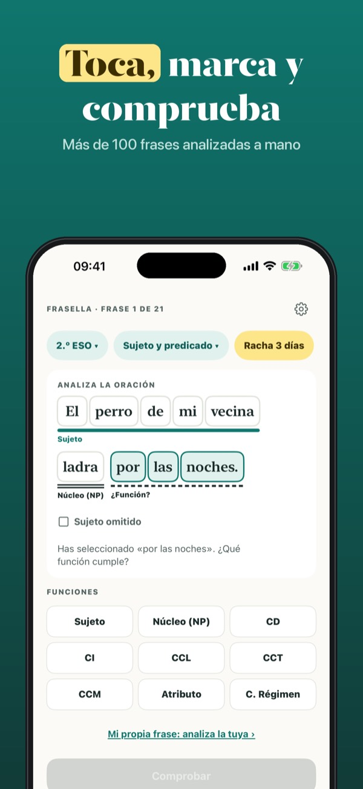
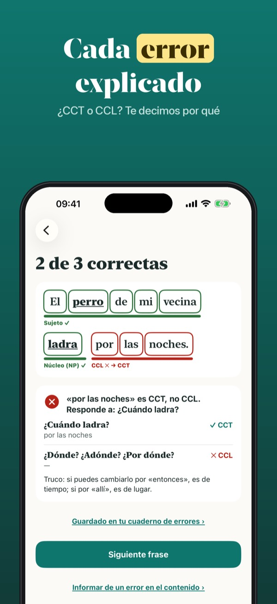
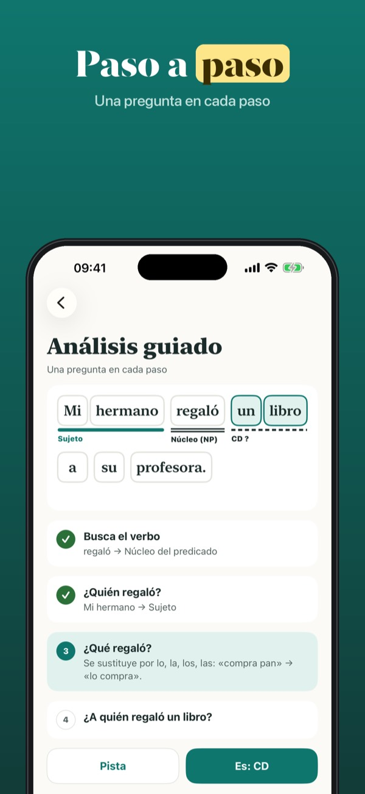
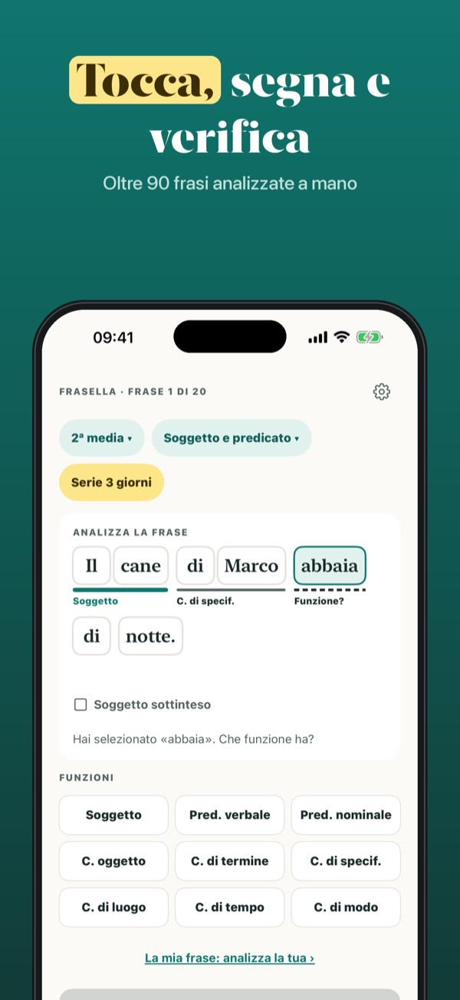
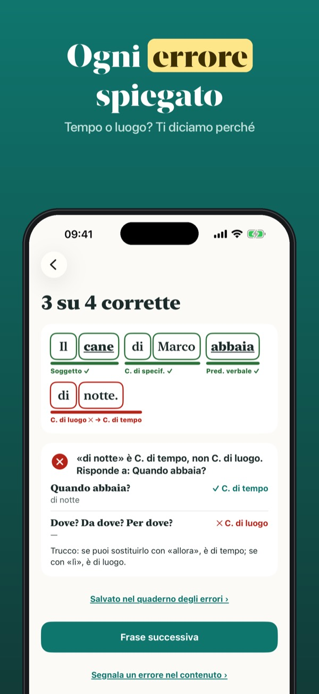
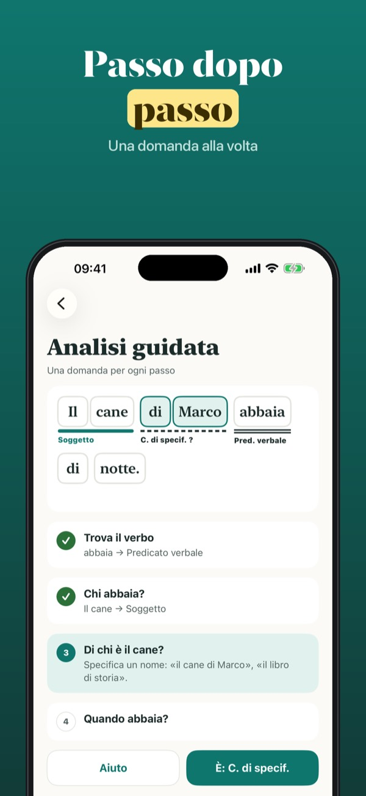

Toca, comprueba y entiende
Toca las palabras de una frase, marca sujeto, predicado y complementos, y comprueba al momento. Si fallas, ves por qué: ¿CCT o CCL?, ¿CD o CI?



Frasella es un cuaderno de práctica de análisis sintáctico para ESO. Cada frase está escrita y analizada por nosotros: tocas las palabras, eliges la función y Frasella te dice al momento qué está bien y, si fallas, por qué.
Sin compra: 48 frases con comprobación y explicación, el análisis guiado y el glosario de funciones. Frasella Plus es un pago único, sin suscripción: todas las frases en los dos idiomas, oraciones compuestas, todo el análisis morfológico, cuaderno de errores completo, «Mi propia frase» y compartir el resumen.
Sin cuentas, sin publicidad y sin conexión: todo se queda en tu iPhone. Para comprar o abrir enlaces se pide antes a un adulto.
Frasella es material de práctica propio: las frases y sus análisis no proceden de libros de texto ni de exámenes, y la app no está vinculada a ninguna editorial ni centro educativo. La terminología puede variar entre libros; en caso de duda, vale la de tu profesor.
Terms of Use (EULA): https://www.apple.com/legal/internet-services/itunes/dev/stdeula/
Privacy: https://apps.baytech.nl/frasella-eu/
Tocca, verifica e capisci
Tocca le parole di una frase, indica soggetto, predicato e complementi e verifica subito. Se sbagli, scopri perché: tempo o luogo? oggetto o termine?



Frasella è un quaderno di esercizi di analisi logica per la scuola media. Ogni frase è scritta e analizzata da noi: tocchi le parole, scegli la funzione e Frasella ti dice subito cosa va bene e, se sbagli, perché.
Senza acquisto: 48 frasi con verifica e spiegazione, l'analisi guidata e il glossario delle funzioni. Frasella Plus è un pagamento unico, senza abbonamento: tutte le frasi in entrambe le lingue, analisi del periodo, tutta l'analisi grammaticale, quaderno degli errori completo, «La mia frase» e la condivisione del riepilogo.
Niente account, niente pubblicità, funziona offline: tutto resta sul tuo iPhone. Per acquistare o aprire link serve prima un adulto.
Frasella è materiale di esercizio nostro: le frasi e le analisi non provengono da libri di testo o verifiche e l'app non è collegata a nessun editore o scuola. La terminologia può cambiare da un libro all'altro; nel dubbio vale quella del tuo insegnante.
Terms of Use (EULA): https://www.apple.com/legal/internet-services/itunes/dev/stdeula/
Privacy: https://apps.baytech.nl/frasella-eu/